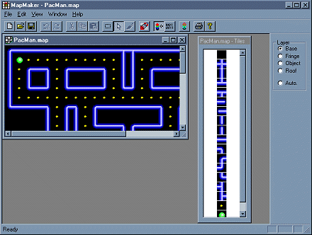
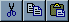
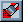
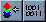
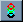
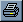
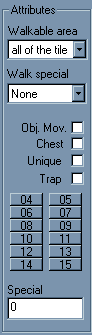

|
The User Interface
Here's a reduced screen shot of a typical MapMaker screen. Click at the image to
get further explanations.

Titlebar
The titlebar shows the name of the currently active map window.

Icons
|
|
Shortcuts for file new, open and save
|
|
|
These are the Undo/ Redo buttons
|
|  |
| |
These buttons are shortcuts for the clipboard functions cut, copy and paste
|
|
|
Using this button, you can switch to selection mode, allowing you
to select rectangular portions of the map, and copy them to the clipboard
|
|
|
This button switches to edit mode (which is the default), allowing
you to set tiles in the map, or to change the attributes of a cell.
|
 |
|
This button switches to attribute draw mode. While in this mode, you can "draw"
with the attributes currently selected, allowing you to set a lot of tiles to
the same attribute values.
|
|  |
|
Redraw map. If the display gets garbled, try this button. If that doesn't
help, mail me. Hey, this is the beta version, after all.
|
|  |
|
These buttons allow to switch from Layer selection mode to
attribute edit mode.
While in tile edit mode, you can set tiles at the current layer by left clicking
the map. In atttribute edit mode, you can change the attributes of a cell.
|
|  |
|
This button displays the Visible Layers dialog, allowing
you to select the layers of the map which should be visible or hidden.
|
|  |
|
This button will allow you to print the map. Printing is not possible with
MapMaker release 1.4pb. I'm working on it.
|
|
|
This button displays the About dialog box.
|
Tile Window
The titlebar of this window shows the name of the Map it belongs to. If you're
in edit mode, you can select a tile by clicking on it, and then draw with it on the map.
Map Window
This window allows you to view and edit the map.
Layer selection
The layer selection dialog bar consists of 4 radio buttons, allowing you to
select the layer to edit. The Base layer is the first
layer drawn, the Roof layer the last. Each layer will
paint over those below it. So you can place a stone tile (object layer) on a
grass tile (base layer). If you need more information on multi- layered maps,
you should read the Tile FAQ, which can be found in the Web at the
tile based section
of the Game Programming Galaxy.
Cell Attributes
Since the attribute dialog bar is relativly complex, I'll explain it in
morde detail. The first combobox, labeled Walkable Area,
allows you to set the walkabilty information of the cell. Using this information,
you can restrict the sprites to part of the tile. This can be usefull for roleplaying
and jump'n'run games.
Walk Special allows you to set additinal information
on the type of walking possible at this cell. This is mainly for rpgs and strategicals, here's a
short description of the possibilities:
- None - nothing special
- Ice - the tile is frozen, player slides and glides at this position
- Swamp - the tile is swampy. Player can only move only slowly
- Water - there might be some kind of current, which can be set using the flags, or special attribute
- Rock - player might need some kind of climbing equipment
- Fall - used to indicate that the tile is aligned vertically and the player cannot
stand on it
The next 16 buttons toggle the corresponding bits in the ObjectFlags member of the
cell (button 15 sets/ clears the highest bit). The first 4 buttons are labeled with
names for flags used in rpgs, namely
- Obj.Mov. Object at this position can be moved
- Chest Object is a chest and contains treasures
- Unique Object at this position is unique
- Trap This position/ object is trapped
Since these buttons do just toggle the lowest 4 bits in ObjectFlags, you can
use them for other purposes, also.
Special allows you to enter a 16 bit value to
store additional information.
|
|  |
|